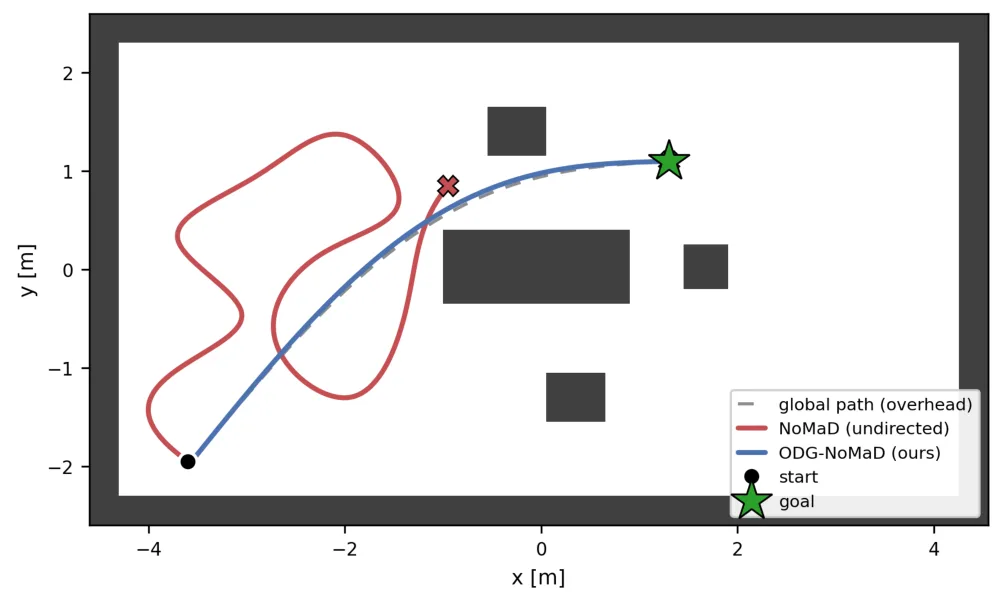
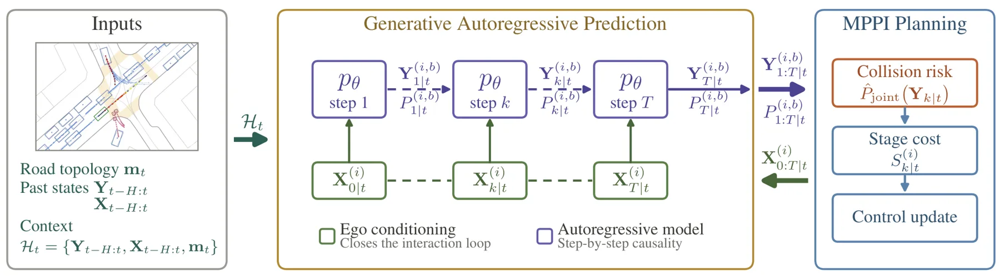

新论文 · 日期 2026-08-25 · score 7 · cs.RO, cs.AI, cs.CV, cs.IT
作者：Oguzhan Baser, Mirac Sozen, Kaan Kale, Sandeep Chinchali, Sriram Vishwanath
评分 8/10
点云表示机器人感知隐私保护信息瓶颈
一句话工作总结：将点云表示压缩与隐私属性抑制统一起来，适合关注协同建图、云端规划和机器人感知数据传输的读者。
RoboShape 在冻结的 Sonata 编码器之后加入信息论压缩头，以 Donsker–Varadhan 互信息估计同时保留目标理解信息、压低敏感属性信息。论文报告嵌入体积缩小 87.5%，物体分类效用保留 98.7%，敏感属性预测在三个室内 LiDAR 数据集上下降 39.3%。
With the increased adoption of robotic agents operating in human environments by scanning and sharing 3D representations (e.g., for fleet learning, cloud-based planning, or collaborative mapping), collected po…

新论文 · 日期 2026-08-25 · score 5 · cs.RO, cs.SY, eess.SY
作者：Carlos Renato C. Durao, Felipe O. Silva, Itzik Klein, Vin{\i}cius M. G. B. Cavalcanti, Adriano Frutuoso, Ettore A. de Barros, Jay A. Farrell
评分 8/10
INS 对准偏置估计EKF水下导航
一句话工作总结：面向 INS 初始对准和偏置可观性的约束设计，对 GNSS/INS 或水下多传感器融合的初始化环节有直接参考价值。
论文优化 TRIAD 粗对准与粗偏置估计，并在零速更新扩展卡尔曼滤波中引入由 TRIAD 推导的非正交误差约束，将姿态误差与惯性传感器偏置直接联系起来。蒙特卡洛仿真和两种等级 IMU 的实验证明，误差与偏置估计可由分钟级加速到秒级，同时保持与传统方法相近的精度。
Inertial navigation systems are specialized navigation apparatuses that equip almost all autonomous underwater and surface vehicles. They require precise initial alignment, i.e., determination of their initial…

新论文 · 日期 2026-08-25 · score 5 · cs.RO, cs.CV
作者：Bingqi Huang, Bingchuan Wei, Yingkai Cai, Zhaokui Wang
评分 6/10
跨视角一致性机器人视觉相机鲁棒性闭环控制
一句话工作总结：虽然核心是机器人世界动作模型，但其对视角协变/不变量的拆分对多相机、视角变化和视觉导航鲁棒性评测有启发。
Selective Cross-View Consistency 只对世界动作模型中视角不变的动作、未来本体感知和价值输出施加跨视角一致性，而不约束本应随视角变化的未来场景块。作者在 LIBERO-Plus 相机轨迹上采用留出视角评测，报告轨道外插闭环成功率提升 12.2 个百分点，同时插值和分布内能力基本不变。
World action models (WAMs) jointly denoise future video frames and robot actions, and the video prior is expected to generalize their control. Camera viewpoint change remains one of their hardest perturbation…
新论文 · 日期 2026-08-25 · score 5 · cs.CV, cs.MA
作者：Xiujin Liu, Tianyu Yang, Yilun Zhao, Xiangliang Zhang
评分 6/10
3DGSNeRF场景编辑空间 grounding
一句话工作总结：关注重建场景上的语义定位、遮挡下跟踪和多视角一致编辑，可作为三维场景表示与交互式重建应用的旁支跟踪。
DesignAgent3D 将文本引导的三维场景编辑改写为 Plan–Perceive–Act 交互流程：先澄清含糊意图，再把目标编辑定位到具体物体或区域，最后施加受控修改并保持场景一致性。编辑结果写回 NeRF 或 3D Gaussian Splatting 表示，以支持持久、多视角一致的新视角渲染。
Text guided 3D scene editing provides an intuitive interface for modifying reconstructed environments, but remains difficult because natural language design requests are often semantically underspecified and m…

新论文 · 日期 2026-08-25 · score 4 · cs.RO, cs.AI
作者：Blossom Treesa Bastian, Keerthi S. Shetty, Manish Kolachalam, Rani Malhotra, Ashish Dutta
评分 6/10
占据栅格探索导航扩散策略深度相机
一句话工作总结：把一次性全局地图和局部深度可通行性约束注入扩散导航策略，对地图辅助探索、占据栅格和视觉导航耦合值得关注。
ODG-NoMaD 在部署时使用一次俯视深度相机构建占据栅格并规划全局路径，再从路径得到期望航向；机器人自身深度相机生成逐帧可通行性图进行避障细化。方向代价梯度被注入扩散策略最后几步，在保留探索多模态性的同时旋转采样轨迹。仿真中相对无引导探索显著降低到目标的剩余距离，并在测试中保持无碰撞。
NoMaD [31] is a learned vision-navigation policy that unifies goal-conditioned navigation and exploration in a single goal-masked diffusion policy. In an unseen environment, however - where neither a goal imag…

新论文 · 日期 2026-08-25 · score 3 · cs.RO
作者：Khaled A. Mustafa, Mohamed-Khalil Bouzidi, Christian Schlauch, Ahmad Gazar, Nadja Klein, Joerg Reichardt, Javier Alonso-Mora
评分 5/10
交互式预测MPPI自动驾驶不确定性
一句话工作总结：面向密集交通的主动预测—规划闭环，适合跟踪多智能体交互、不确定性建模和采样式控制与定位感知系统的结合。
该框架把以自车未来动作条件化的生成式自回归预测模型接入 Model Predictive Path Integral 控制。预测模型针对每个候选动作输出周围交通参与者的随机多模态未来，嵌套采样用于估计期望代价和碰撞风险，使车辆能够主动评估不同动作如何改变交互结果，并选择降低不确定性的动作。
Dense traffic is inherently interactive. The ego vehicle and surrounding agents continuously influence each other's reactions, making "what-if" reasoning essential for safe and efficient driving. To enable suc…